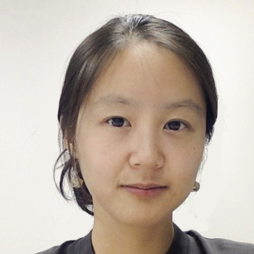

Invited Speakers

Stanford University
July 26, 2021 | Workshop at the 43rd Annual Meeting of the Cognitive Science Society (Virtual)
In Ancient Greek philosophy, emotion is considered the opposite of cognition: cognition is rational while emotion is irrational; cognition is cold while emotion is hot. Yet, for anyone who studies how the human mind works, the ubiquity and significance of emotions in our mental lives is undeniable. We can represent not only others’ goals, desires, beliefs, and actions but also their emotional responses to events, and our ability to reason about others’ emotions greatly influences how we interact with others.
This workshop features an emerging domain of work that investigates how humans reason about others’ emotion or affect, which we term Affective Cognition. This research area is grounded in traditional theory of mind research that investigates how we reason about other minds. In recent years, the application of interdisciplinary approaches, including developmental, computational, neural, anthropological, and machine learning methods, has given this area an impetus for rapid growth and exciting achievements. We propose that Affective Cognition is an emerging domain of Cognitive Science, and we bring together a group of leading scholars in Affective Cognition to introduce this young, interdisciplinary domain to the cognitive science community.